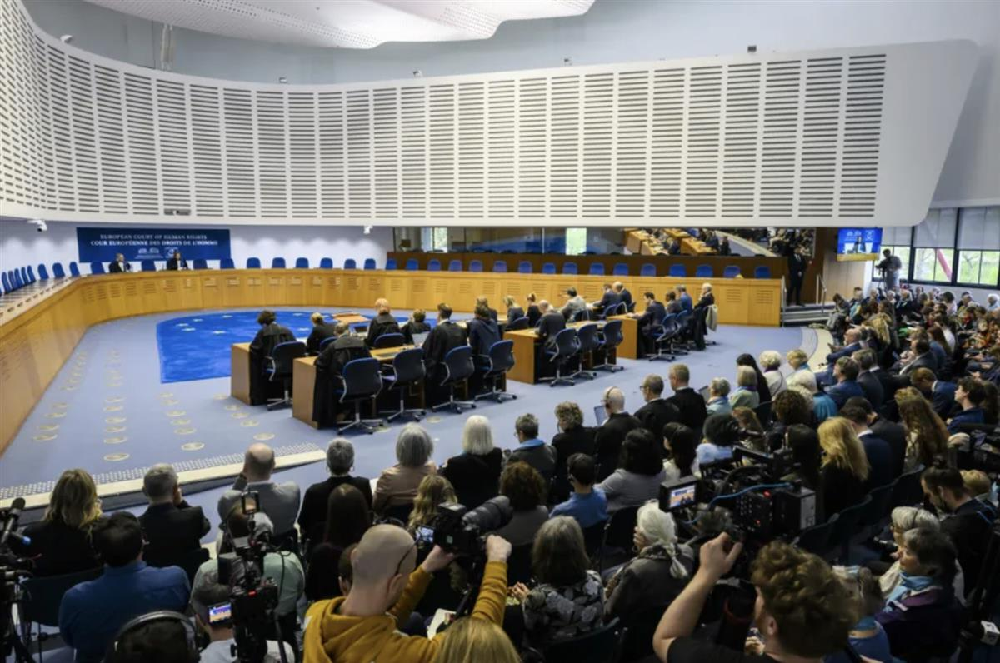

Anne Mahrer (left) co-president of “Senior Women for Climate Protection” and co-president Rosmarie Wydler-Waelti (right), react to the verdict reached by the the European Court of Human Rights on Tuesday 9 April 2024 in Strasbourg, France. On Tuesday, the European Court of Human Rights condemned Switzerland for violating the Convention on Human Rights, finding in favour of the “Senior Women for Climate Protection” association, which was challenging Switzerland's inaction in the face of climate change. Jean-Christophe Bott/Keystone
SOURCE: SWISS INFO
Landmark ruling: Switzerland’s climate policy violates human rights
In a much-anticipated ruling, the European Court of Human Rights has decided that Swiss authorities are responsible for not implementing efficient climate change policies and violating the right to life of a group of elderly women in Switzerland. The verdict could have worldwide repercussions.
This content was published onApril 9, 2024 - 14:37
Luigi Jorio
“Today is a day of joy, relief and very strong emotions,” Norma Bargetzi-Horisberger, a member of the Swiss Climate Seniors Association, told SWI swissinfo.ch in Strasbourg where the ruling was handed down.
Eight years after starting a legal battle against their country, accusing it of not doing enough to combat global warming, the association of women aged 64 and over who have gathered here can celebrate.
On Tuesday, the European Court of Human Rights (ECHR) upheld their appeal and condemned Switzerland for violating the right to respect for private and family life (Article 8 of the European Convention on Human Rights).
Today’s ruling is unprecedented. This is the first time that the ECHR has condemned a state for failing to take action against climate change, linking the protection of human rights to compliance with environmental obligations.
“For the first time, an international tribunal recognises that human rights include the right to climate protection,” says Anja Grada, a member of the Climate Strike movement. “It’s clear that Switzerland’s climate policy violates the most fundamental human rights.”
The ruling is clear confirmation that “states bear a positive obligation to shield their citizens from climate change and to safeguard their welfare,” said Catherine Higham, Policy Fellow at the Grantham Research Institute on Climate Change and the Environment.
‘Critical gaps’ in Swiss climate policy
In handing down the ruling, Siofra O’Leary, president of the ECHR, said that Switzerland had not implemented sufficient national policies to tackle climate change, as required by the Paris Climate Agreement.
The judge found numerous “critical gaps” in the Swiss process of putting in place an appropriate regulatory framework. These include the inability to quantify the greenhouse gas emissions the country can still emit to limit global warming to 1.5°C above pre-industrial levels.
The ECHR also ruled on two other cases on Tuesday. It ruled that the case brought by a group of young Portuguese against its own state and 31 other nations, including Switzerland, was inadmissible. It drew the same conclusion for the legal action brought by the former mayor of the French municipality of Grande-Synthe, who asked to condemn the French government for climate inaction.

The ECHR also ruled on two other cases on Tuesday. It ruled that the case brought by a group of young Portuguese against its own state and 31 other nations, including Switzerland, was inadmissible KEYSTONE/Jean-Christophe Bott
“We are sorry for the outcome for the cause of the young Portuguese. But we gave them a big hug and told them that our victory is also for them,” says Norma Bargetzi-Horisberger.
Eight years of fighting Swiss climate policy
In 2016, the Senior Women for Climate Protection accused the Swiss authorities of pursuing a climate policy with insufficient targets and measures, in violation of their right to life. Older people are more vulnerable to the effects of the climate crisis and heatwaves in particular. According to some studies, women are more affected than men.
The Federal Administrative Court and later the Federal Supreme Court, the highest judicial body in Switzerland, rejected the request to adopt more ambitious targets for reducing emissions.
In 2020, the association, supported by Greenpeace Switzerland, had turned to the ECHR to denounce the violation of several rights enshrined in the European Convention on Human Rights, including the right to life (Article 2) and the right to respect for private and family life (Article 8).
Hopes were raised by the fact that the ECHR held the first public hearing in its history in relation to a climate lawsuit in March 2023. But not even the most optimistic advocates of the Swiss group’s cause could have imagined a verdict as positive as today’s.
‘A precedent with important consequences’
The ECHR’s judgment is binding, meaning Switzerland must comply with it. “We expect the Federal Council and Parliament to do everything possible to achieve the global goal of limiting the temperature increase to 1.5 °C,” Jonas Kampuš of the Zurich section of the Climate Strike said in a statement.
“Switzerland must finally act,” the World Wildlife Fund wrote on X. The Swiss women’s victory is a victory for all generations, according to the environmental organization. “It’s a precedent with important consequences.”
Joana Setzer, Associate Professor at the Grantham Research Institute on Climate Change and the Environment calls the victory in the Climate Action case “monumental”.
“The landmark ruling by the European Court of Human Rights not only sets a precedent in environmental and climate law but also signals a momentous shift in the global legal landscape concerning climate change,” she wrote in an email to SWI.
Rosmarie Wydler-Waelti, (left) co-president of “Senior Women for Climate Protection”, speaks with Greta Thunberg, (right) climate activist, after the ruling by the European Court of Human Rights following the appeal lodged by the “Senior Women for Climate Protection” before the European Court of Human Rights (ECHR) on Tuesday, April 9, 2024, in Strasbourg, France. Jean-Christophe Bott/Keystone
According to Setzer, the ruling has a direct impact on the Council of Europe’s 46 member states, but its ramifications will extend to the whole world.
The verdict “serves as a crucial reference point for courts worldwide in interpreting the human rights obligations of states regarding climate action,” she says.
SOURCE: SWISS INFO